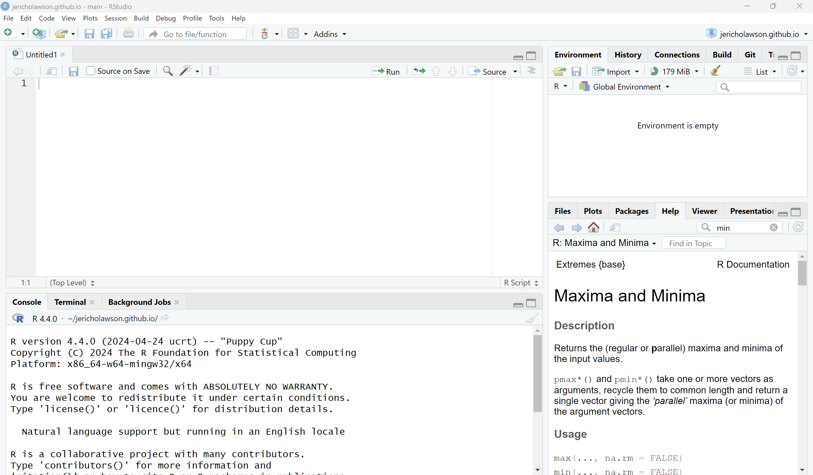

Call me Jericho, but if you prefer, Professor Lawson or Dr. Lawson is okay!
Lecturer of Statistical and Data Sciences
Research interests: variable selection, imaging, machine learning
My college journey:
Ph.D. in Applied Statistics from UC Riverside
M.S. in Statistics from UC Riverside
B.S. in Applied Mathematics; Statistics and Data Science from University of Arizona
Who am I?
From Arizona!!
Will either hear me talk about the state or the Suns
Hiker, foodie, and explorer!
Activity
Form groups of 2-3 with your peers near you. Complete the following tasks:
Introduce yourselves to each other! Mention your name, major, and one cool thing you did over the winter.
For those, that have a laptop on you, attempt to complete the following:
Create a numeric vector that contains a sequence of numbers from 1 to 50.
Determine how much memory is being used by R right now.
Make a simple plot using the following data: 4, 7, 2, 5, 2, 3, 3, 5, 3, 2, 1, 8
Discuss how you were able to complete these tasks.
Review
R is the coding language at hand
e.g. syntax, memory allocation
RStudio is the IDE/application where we can interact with R
e.g. execution, view output, save files
Other IDEs exist
The RStudio Interface

Objects and Data Structures
Activity: In the same groups, list out all data structures in R.
i.e. the ways we can store various pieces of data in R
Vectors
Family of data types
Atomic vectors or lists
We will focus on atomic vectors
Atomic Vectors
Elements must be of same type
Can use [] to access elements
Can be built via c()
Examples (Concatenation)
a <-c(27, 24, 25, 16, 18); a
[1] 27 24 25 16 18
b <-c(T, F, F, T); b
[1] TRUE FALSE FALSE TRUE
c <-c("hello", "everyone"); c
[1] "hello" "everyone"
d <-c(27L, 24L, 25L, 16L, 18L); d
[1] 27 24 25 16 18
Testing and Coercion
is.double(b)
[1] FALSE
as.double(b)
[1] 1 0 0 1
typeof(b)
[1] "logical"
Hierarchy for Coercion
Activity: Use the is.___() and as.___() functions on each of the four objects to determine which type is the most flexible (all the way to the least flexible).
Attributes
Hold certain information about a vector (with attributes())
attributes(a)
NULL
Can add a new attribute with attr(object, new_attribute)